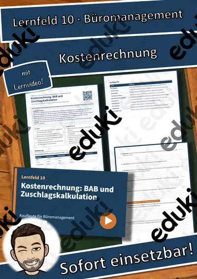
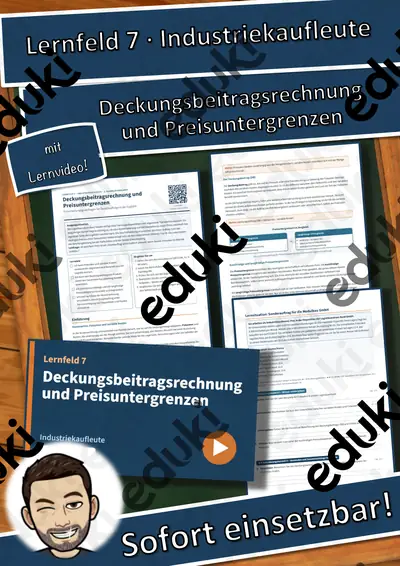
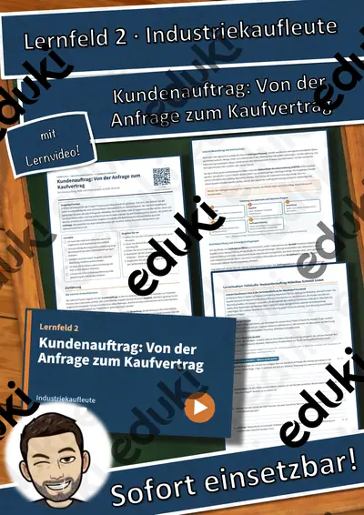
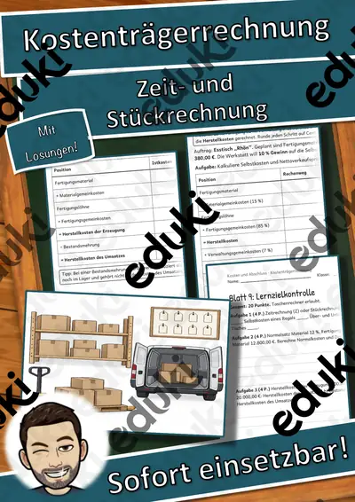

LF 7 Industriekaufleute: Mehrstufige Kostenstellenrechnung im BAB – Übungen, Lösungen + Lernvideo
Mehrstufige Kostenstellenrechnung im BAB – Kostenstellenumlage und Zuschlagssatzermittlung im Industriebetrieb
Für den Berufsschulunterricht im Ausbildungsberuf Industriekaufmann/-frau, Lernfeld 7 „Logistik- und Lagerprozesse koordinieren, umsetzen und überwachen“ (2. Ausbildungsjahr).
Das steckt drin (9 Seiten):
- Einstieg mit realistischer Ausgangssituation und Leitfrage
- Einführung als Sachtext auf Berufsschulniveau mit Merkekästen
- Schaubild und Fachbegriffe-Tabelle
- handlungsorientierte Lernsituation mit Materialien
- 11 Aufgaben nach Anforderungsbereichen (I: 4, II: 5, III: 2) mit Punkten und Sozialform
- Selbstcheck, Prüfungstipp und Notenorientierung
- ausführliche Lösungen auf eigenen Seiten
- QR-Code zum passenden Lernvideo (ca. 3–6 Minuten, mit Untertiteln)Lernziele:
- Ich kann Einzelkosten und Gemeinkosten voneinander abgrenzen und deren Bedeutung für den Betriebsabrechnungsbogen erklären.
- Ich kann primäre Gemeinkosten mithilfe von Verteilungsschlüsseln auf Vor- und Hauptkostenstellen verteilen.
- Ich kann die sekundäre Kostenverrechnung zur Umlage der Vorkostenstellen auf die Hauptkostenstellen fachgerecht durchführen.
- Ich kann die Gemeinkostenzuschlagssätze der Hauptkostenstellen ermitteln und für die Vorkalkulation anwenden.
- Ich kann Abweichungen im Material- und Lagerbereich kritisch bewerten und wirtschaftliche Handlungsempfehlungen ableiten.
Alle Betriebe, Personen und Fälle sind frei erfunden, alle Grafiken eigene Darstellungen. Sofort einsetzbar im Unterricht, für Vertretungsstunden, zur Prüfungsvorbereitung und zum selbstständigen Lernen.
FachWirtschaft, Versicherung & Verwaltung (BS)
Klasse–
SchulformBerufsschule
MaterialartArbeitsblätter, Prüfungsvorbereitung
Ähnliche Materialien

LF 10 Kaufleute für Büromanagement: Kostenrechnung: BAB und Zuschlagskalkulation – Übungen, Lösungen + Lernvideo

LF 7 Industriekaufleute: Deckungsbeitragsrechnung und Preisuntergrenzen – Übungen, Lösungen + Lernvideo

LF 2 Industriekaufleute: Kundenauftrag: Von der Anfrage zum Kaufvertrag – Übungen, Lösungen + Lernvideo

LF 3 Industriekaufleute: Beschaffungsplanung: Bestellpunkt- und Bestellrhythmusverfahren – Übungen, Lösungen + Lernvideo

LF 4 Industriekaufleute: Belegerfassung und Buchung von Geschäftsfällen – Übungen, Lösungen + Lernvideo

LF 12 Industriekaufleute: Brutto-Netto-Entgeltberechnung und Sozialversicherung – Übungen, Lösungen + Lernvideo

Logistik Lückentext mit Wortspeicher Hörverstehen und Suchsel
